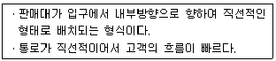
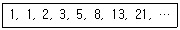
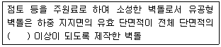
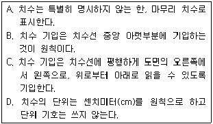
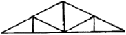

실내건축기능사 (2015-01-25 기출문제)
1과목: 실내디자인
1. 다음 설명에 알맞는 상점의 진열 및 판매대 배치 유형은?

- 굴절배치형
- 직렬배치형
- 환상배치형
- 복합배치형
(정답률: 97%)

2. 양식주택과 비교한 한식주택의 특징에 관한 설명으로 옳지 않은 것은?
- 공간의 융통성이 낮다.
- 가구는 부수적인 내용물이다.
- 평면은 실의 위치별 분화이다.
- 각 실의 프라이버시가 약하다.
(정답률: 60%)
3. 실내디자인 요소에 관한 설명으로 옳은 것은?
- 천장은 바닥과 함께 공간을 형성하는 수직적 요소이다.
- 바닥은 다른 요소들에 비해 시대와 양식에 의한 변화가 현저하다.
- 기둥은 선형의 수직요소로 벽체를 대신하여 구조적인 요소로만 사용된다.
- 벽은 공간을 에워싸는 수직적 요소로 수평방향을 차단하여 공간을 형성하는 기능을 갖는다.
(정답률: 63%)
4. 어느 실내공간을 실제 크기보다 넓어 보이게 하려는 방법으로 옳지 않은 것은?
- 창이나 문 등을 크게 한다.
- 벽지는 무늬가 큰 것을 선택한다.
- 큰 가구는 벽에 부착시켜 배치한다.
- 질감이 거친 것보다 고운 마감재료를 선택한다.
(정답률: 79%)
5. 창문을 통해 입사되는 광량, 즉 빛 환경을 조절하는 일광조절장치에 속하지 않는 것은?
- 픽처 윈도
- 글라스 커튼
- 로만 블라인드
- 드레이퍼리 커튼
(정답률: 73%)
6. 스툴의 일종으로 더 편안한 휴식을 위해 발을 올려놓는데도 사용되는 것은?
- 세티
- 오토만
- 카우치
- 이지체어
(정답률: 62%)
7. 점과 선의 조형효과에 관한 설명으로 옳지 않은 것은?
- 점은 선과 달리 공간적 착시효과를 이끌어낼 수 없다.
- 선은 여러 개의 선을 이용하여 움직임, 속도감 등을 시각적으로 표현할 수 있다.
- 배경의 중심에 있는 하나의 점은 점에 시선을 집중시키고 정지의 효과를 느끼게 한다.
- 반복되는 선의 굵기와 간격, 방향을 변화시키면 2차원에서 부피와 깊이를 느끼게 표현할 수 있다.
(정답률: 77%)
8. 간접조명에 관한 설명으로 옳지 않은 것은?
- 균질한 조도를 얻을 수 있다.
- 직접조명보다 조명의 효율이 낮다.
- 직접조명보다 뚜렷한 입체효과를 얻을 수 있다.
- 직접조명보다 부드러운 분위기 조성이 용이하다.
(정답률: 74%)
9. LDK형 단위주거에서 D가 의미하는 것은?
- 거실
- 식당
- 부엌
- 화장실
(정답률: 82%)
10. 형태의 의미구조에 의한 분류에서 인간의 지각, 즉 시각과 촉각 등으로 직접 느낄 수 없고 개념적으로만 제시될 수 있는 형태는?
- 현실적 형태
- 인위적 형태
- 상징적 형태
- 자연적 형태
(정답률: 82%)
11. 다음 중 실내디자인을 평가하는 기준과 가장 거리가 먼 것은?
- 경제성
- 기능성
- 주관성
- 심미성
(정답률: 74%)
12. 다음은 피보나치 수열을 나타낸 것이다. “21” 다음에 나오는 숫자는?

- 24
- 29
- 34
- 38
(정답률: 92%)
13. 다음 중 실내디자인에서 리듬감을 주기 위한 방법과 가장 거리가 먼 것은?
- 방사
- 반복
- 조화
- 점이
(정답률: 57%)
14. 디자인 원리 중 강조에 관한 설명으로 옳지 않은 것은?
- 균형과 리듬의 기초가 된다.
- 힘의 조절로서 전체 조화를 파괴하는 역할을 한다.
- 구성의 구조 안에서 각 요소들의 시각적 계층 관계를 기본으로 한다.
- 강조의 원리가 적용되는 시각적 초점은 주위가 대칭적 균형일 때 더욱 효과적이다.
(정답률: 67%)
15. 다음의 부엌 가구 배치 유형 중 좁은 면적 이용에 가장 효과적이며 주로 소규모 부엌에 사용되는 것은?
- 일자형
- L자형
- 병렬형
- U자형
(정답률: 72%)
16. 측창채광에 관한 설명으로 옳지 않은 것은?
- 통풍ㆍ차열에 유리하다.
- 시공이 용이하며 비막이에 유리하다.
- 투명 부분을 설치하면 해방감이 있다.
- 편측채광의 경우 실내의 조도분포가 균일하다.
(정답률: 79%)
17. 기온ㆍ습도ㆍ기류의 3요소의 조합에 의한 실내 온열감각을 기온의 척도로 나타낸 온열지표는?
- 유효온도
- 등가온도
- 작용온도
- 합성온도
(정답률: 78%)
18. 열전도율의 단위로 옳은 것은?
- W
- W/m
- W/mㆍK
- W/m2ㆍK
(정답률: 63%)
19. 2가지 음이 동시에 귀에 들어와서 한 쪽의 음 때문에 다른 쪽의 음이 작게 들리는 현상은?
- 공명 효과
- 일치 효과
- 마스킹 효과
- 플러터 에코 효과
(정답률: 53%)
20. 환기의 종류 중 실내외의 온도차에 의한 공기의 밀도차가 환기의 원동력이 되는 것은?
- 전반환기
- 동력환기
- 풍력환기
- 중력환기
(정답률: 80%)
2과목: 실내환경
21. 변성암에 속하지 않는 것은?
- 대리석
- 석회석
- 사문암
- 트래버틴
(정답률: 43%)
22. 다음 중 구조 재료에 요구되는 성질과 가장 관계가 먼 것은?
- 외관은 좋은 것이어야 한다.
- 가공이 용이한 것이어야 한다.
- 내화, 내구성이 큰 것이어야 한다.
- 재질이 균일하고 강도가 큰 것이어야 한다.
(정답률: 89%)
23. 다음 중 콘크리트 바탕에 적용이 가장 곤란한 도료는?
- 에폭시도료
- 유성바니시
- 염화비닐도료
- 염화고무도료
(정답률: 53%)
24. 석재의 일반적인 성질에 관한 설명으로 옳지 않은 것은?
- 불연성이다.
- 내구성, 내수성이 우수하다.
- 비중이 크고 가공성이 좋지 않다.
- 압축강도는 인장강도에 비해 매우 작다.
(정답률: 74%)
25. 도막 방수재, 실링재로 사용되는 열경화성 수지는?
- 아크릴수지
- 염화비닐수지
- 폴리스티렌수지
- 폴리우레탄수지
(정답률: 51%)
26. 목재의 강도에 관한 설명으로 옳은 것은?
- 일반적으로 변재가 심재보다 강도가 크다.
- 목재의 강도는 일반적으로 비중에 반비례한다.
- 목재의 강도는 힘을 가하는 방향에 따라 다르다.
- 섬유포화점 이상의 함수 상태에서는 함수율이 적을수록 강도가 커진다.
(정답률: 52%)
27. 굳지 않은 콘크리트의 워커빌리티 측정 방법에 속하지 않는 것은?
- 비비시험
- 슬럼프시험
- 비카트시험
- 다짐계수시험
(정답률: 36%)
28. 건축재료의 사용목적에 따른 분류에 속하지 않는 것은?
- 구조재료
- 마감재료
- 유기재료
- 차단재료
(정답률: 74%)
29. 수화열이 낮아 댐과 같은 매스 콘크리트 구조물에 사용되는 시멘트는?
- 보통포틀랜드시멘트
- 조강포틀랜드시멘트
- 중용열포틀랜드시멘트
- 내황산염포틀랜드시멘트
(정답률: 66%)
30. 천연 아스팔트에 속하지 않는 것은?
- 아스팔타이트
- 로크 아스팔트
- 레이크 아스팔트
- 스트레이트 아스팔트
(정답률: 54%)
3과목: 실내건축재료
31. 콘크리트의 강도 중 일반적으로 가장 큰 것은?
- 휨강도
- 인장강도
- 압축강도
- 전단강도
(정답률: 76%)
32. 목재를 절삭 또는 파쇄하여 작은 조각으로 만들어 접착제를 섞어 고온, 고압으로 성형한 판재는?
- 합판
- 섬유판
- 집성목재
- 파티클보드
(정답률: 59%)
33. 콘크리트 혼화제 중 작업성능이나 동결융해 저항성능의 향상을 목적으로 사용하는 것은?
- AE제
- 증점제
- 기포제
- 유동화제
(정답률: 81%)
34. 다음은 한국산업표준(KS)에 따른 점토 벽돌 중 미장 벽돌에 관한 용어의 정의이다. ( )안에 알맞은 것은?

- 30%
- 40%
- 50%
- 60%
(정답률: 57%)
35. 소다석회유리에 관한 설명으로 옳지 않은 것은?
- 용융하기 쉽다.
- 풍화되기 쉽다.
- 산에는 강하나 알칼리에는 약하다.
- 건축물의 창유리로는 사용할 수 없다.
(정답률: 61%)
36. 구리(Cu)와 주석(Sn)을 주체로 한 합금으로 건축장식철물 또는 미술공예재료에 사용되는 것은?
- 니켈
- 양은
- 황동
- 청동
(정답률: 68%)
37. 콘크리트가 타설된 후 비교적 가벼운 물이나 미세한 물질 등이 상승하고, 무거운 골재나 시멘트는 침하하는 현상은?
- 쿨링
- 블리딩
- 레이턴스
- 콜드조인트
(정답률: 74%)
38. 플라스틱 건설재료의 일반적인 성질에 관한 설명으로 옳지 않은 것은?
- 일반적으로 전기절연성이 우수하다.
- 강성이 크고 탄성계수가 강재의 2배이므로 구조재료로 적합하다.
- 가공성이 우수하여 기구류, 판류, 파이프 등의 성형품 등에 많이 쓰인다.
- 접착성이 크고 기밀성, 안전성이 큰 것이 많으므로 접착제, 실링제 등에 적합하다.
(정답률: 67%)
39. 혼합한 미장재료에 아직 반죽용 물을 섞지 않은 상태를 의미하는 용어는?
- 초벌
- 재벌
- 물비빔
- 건비빔
(정답률: 79%)
40. 다음 중 기둥 및 벽 등의 모서리에 대어 미장바름을 보호하기 위해 사용하는 철물은?
- 메탈 라스
- 코너 비드
- 와이어 라스
- 와이어 메시
(정답률: 72%)
41. 철근콘크리트 구조에서 나선철근으로 둘러싸인 원형단면 기둥 주근의 최소 개수는?
- 3개
- 4개
- 6개
- 8개
(정답률: 57%)
42. 일반적인 삼각 스케일에 표시되어 있지 않은 축척은?
- 1/100
- 1/300
- 1/500
- 1/700
(정답률: 75%)
43. 도면표시기호 중 두께를 표시하는 기호는?
- THK
- A
- V
- H
(정답률: 76%)
44. 도면을 접는 크기의 표준으로 옳은 것은? (단, 단위는 mm임)
- 841×1189
- 420×294
- 210×297
- 1⑤×148
(정답률: 76%)
45. 이오토막으로 마름질한 벽돌의 크기로 옳은 것은?
- 온장의 1/4
- 온장의 1/3
- 온장의 1/2
- 온장의 3/4
(정답률: 50%)
46. 용착 금속이 흠에 차지 않고 흠 가장자리가 남아 있는 불완전 용접을 무엇이라 하는가?
- 언더컷
- 블로홀
- 오버랩
- 피트
(정답률: 46%)
47. 건축물을 각 층마다 창틀 위에서 수평으로 자른 수평 투상도로서 실의 비채 및 크기를 나타내는 도면은?
- 입면도
- 평면도
- 단면도
- 전개도
(정답률: 67%)
48. 건축물의 설계도면 중 사람이나 차, 물건 등이 움직이는 흐름을 도식화한 도면은?
- 구상도
- 조직도
- 평면도
- 동선도
(정답률: 76%)
49. 목구조에서 2층 이상의 기둥 전체를 하나의 단일재로 사용하는 기둥은?
- 통재기둥
- 평기둥
- 샛기둥
- 배흘림 기둥
(정답률: 76%)
50. 다음 중 선의 굵기가 가장 굵어야 하는 것은?
- 절단선
- 지시선
- 외형선
- 경계선
(정답률: 62%)
4과목: 건축일반
51. 건축 제도 통칙에서 규정하고 있는 치수에 대한 설명 중 옳은 것을 모두 고르면?

- A
- A, B
- A, C
- A, D
(정답률: 67%)
52. 건축 설계도면에서 중심선, 절단선, 경계선 등으로 사용되는 선은?
- 실선
- 일점쇄선
- 이점쇄선
- 파선
(정답률: 73%)
53. 각 건축구조의 특성에 대한 설명으로 틀린 것은?
- 벽돌구조는 횡력 및 지진에 강하다.
- 철근콘크리트구조는 철골구조에 비해 내화성이 우수하다.
- 철골구조의 공사는 철근콘크리트구조 공사에 비해 동절기 기후에 영향을 덜 받는다.
- 목구조는 소규모 건축에 많이 쓰이며 화재에 취약하다.
(정답률: 66%)
54. 도면을 작도할 때의 유의 사항 중 옳지 않은 것은?
- 선의 굵기가 구별되는지 확인한다.
- 선의 용도를 정확하게 알 수 있도록 작도한다.
- 문자의 크기를 명확하게 한다.
- 보조선을 진하게 긋고 글씨를 쓴다.
(정답률: 85%)
55. 그림과 같은 트러스의 명칭은?

- 워렌(warren)트러스
- 비렌딜(vierendeel)트러스
- 하우(howe)트러스
- 핑크(pink)트러스
(정답률: 47%)
56. 실시 설계도면에 포함되지 않는 도면은?
- 배치도
- 동선도
- 단면도
- 창호도
(정답률: 45%)
57. 건축물의 투시도법에 쓰이는 용어에 대한 설명 중 옳지 않은 것은?
- 화면(Picture Plane, P.P.)은 문체와 시점 사이에 기면과 수직한 직립 평면이다.
- 수평면(Horizontal Plane, P.P.)은 기선에 수평한 면이다.
- 수평선(Horizontal Line, H.L.)은 수평면과 화면의 교차선이다.
- 시점(Eye Point, E.P.)은 보는 사람의 눈 위치이다.
(정답률: 44%)
58. 제도 용구와 용도의 연결이 틀린 것은?
- 컴퍼스 - 원이나 호를 그릴 때 사용
- 디바이더 - 선을 일정간격으로 나눌 때 사용
- 삼각스케일 - 길이를 재거나 직선을 일정한 비율로 줄여 나타낼 때 사용
- 운형자 - 긴 사선을 그릴 때 사용
(정답률: 73%)
59. 이형 철근의 마디, 리브와 관련이 있는 힘의 종류는?
- 인장력
- 압축력
- 전단력
- 부착력
(정답률: 47%)
60. 고력볼트접합에서 힘을 전달하는 대표적인 접합방식은?
- 인장접합
- 마찰접합
- 압축접합
- 용접접합
(정답률: 44%)